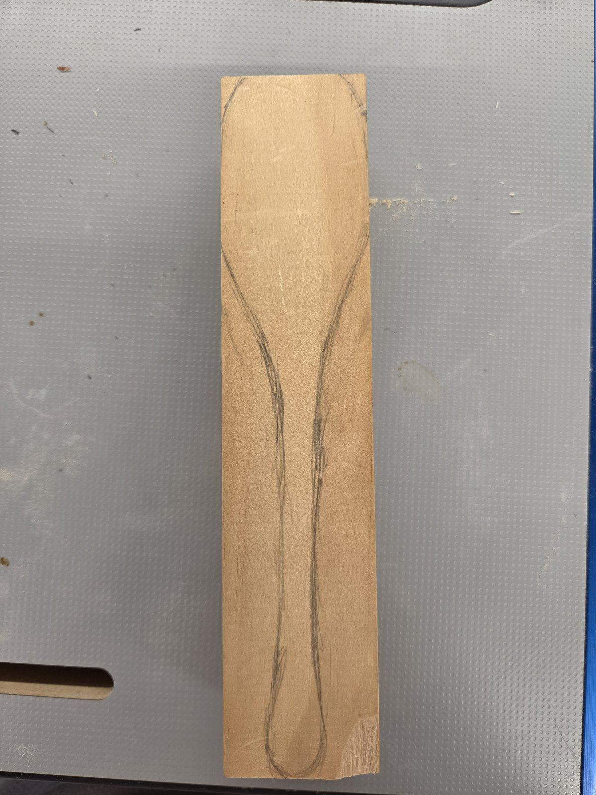
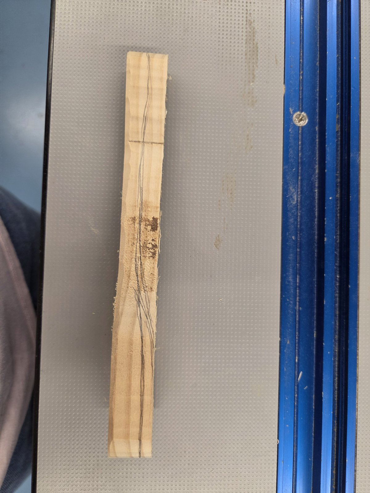
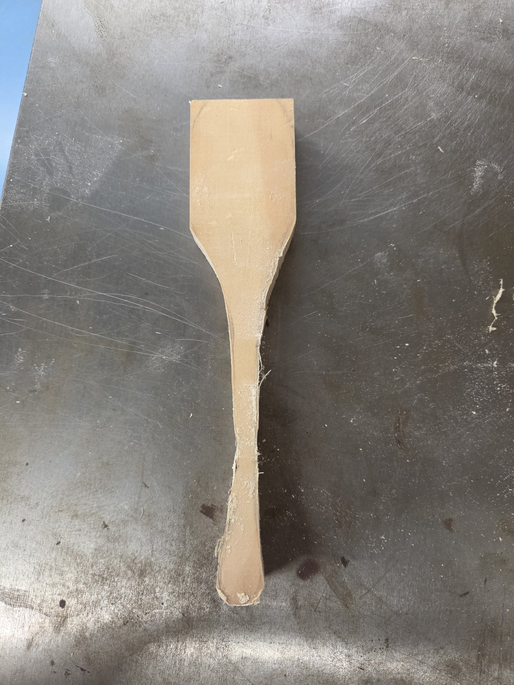
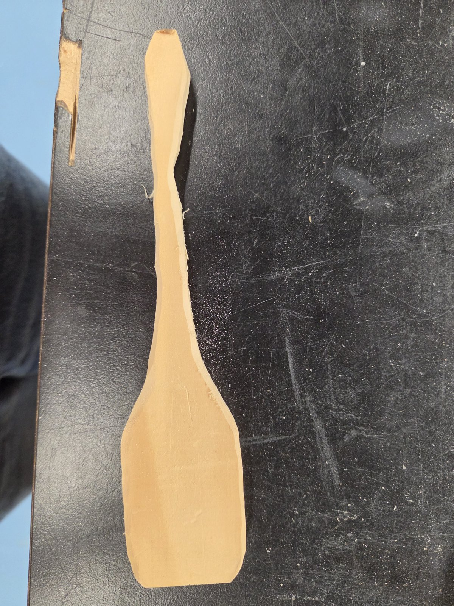
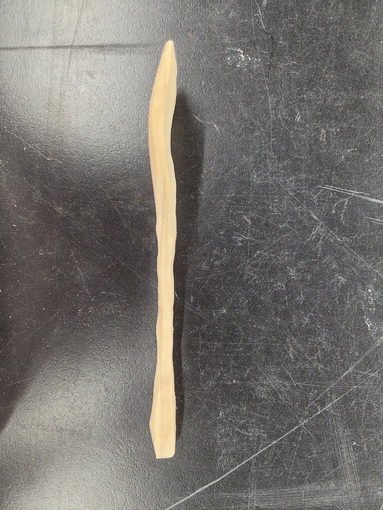
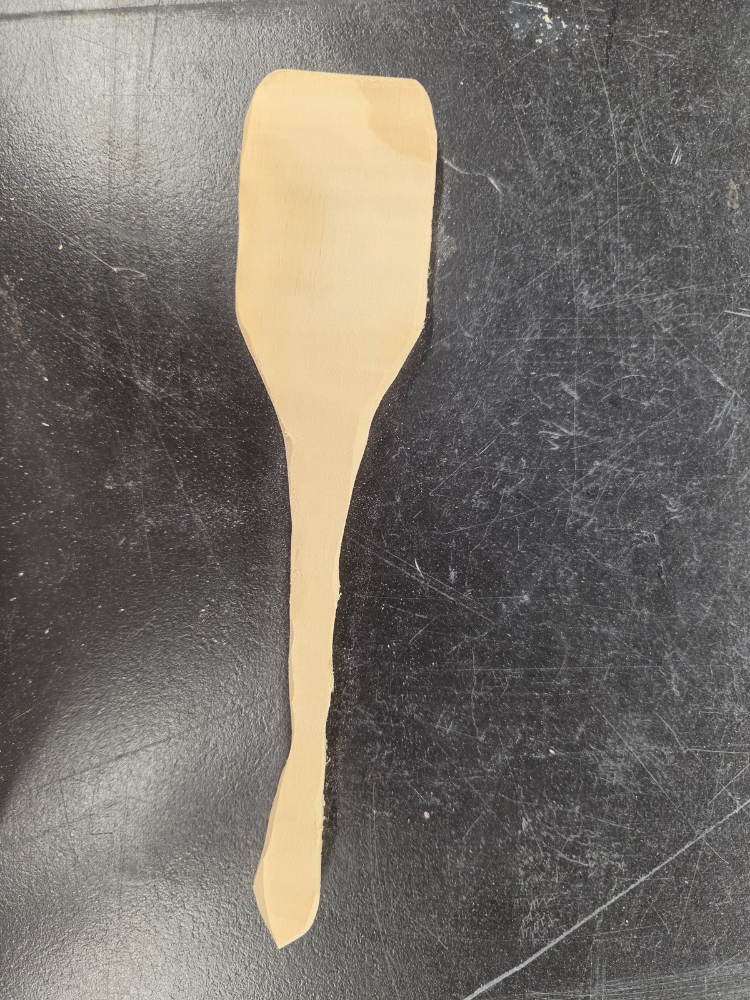
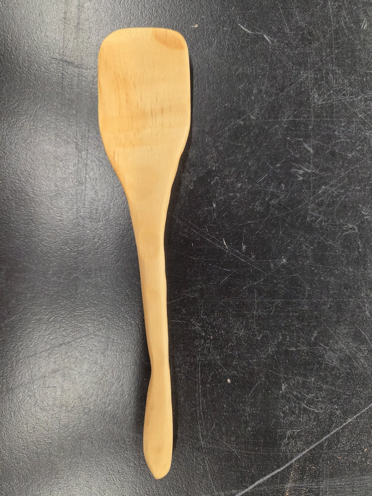
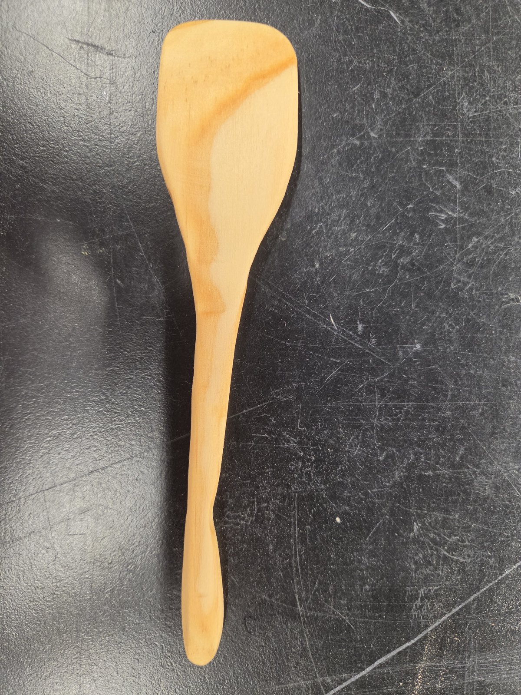
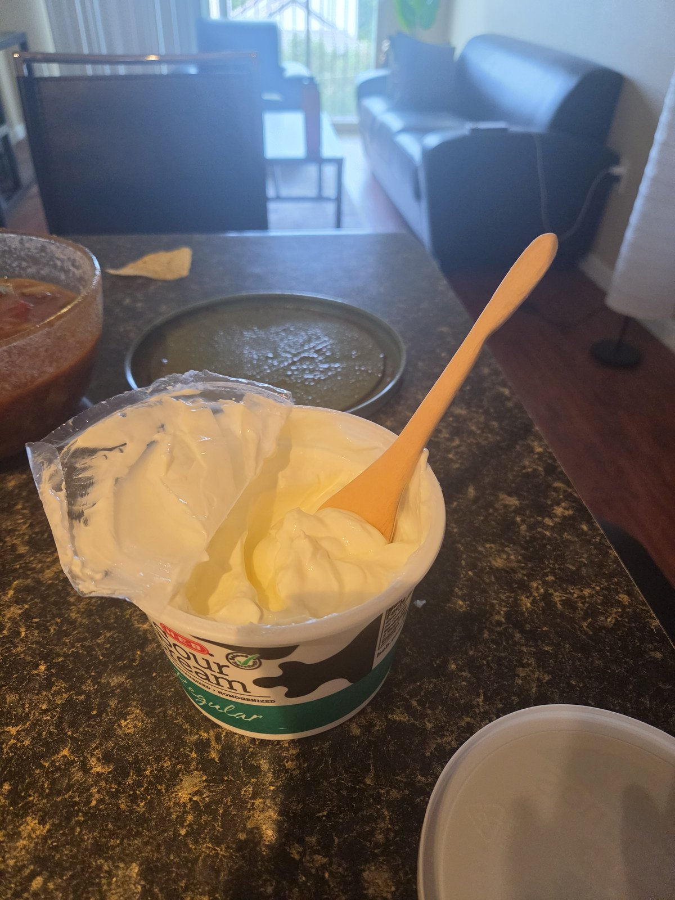

Material work
Wooden Spoon
A hand-carved utensil from blank to form, shown here as material work, not a full product case study.
Layout
Pencil the spoon silhouette onto the blank before any cutting.


Rough cut
Cut the outer profile from the blank so the handle and head read as one piece.

Shaping
Carve facets and refine the handle curve while the form is still rough under the tool.



Final form
Sanded finish with the grip curve and grain left visible.


In use
Quick check that the length and head work in a real container.

Jewelry